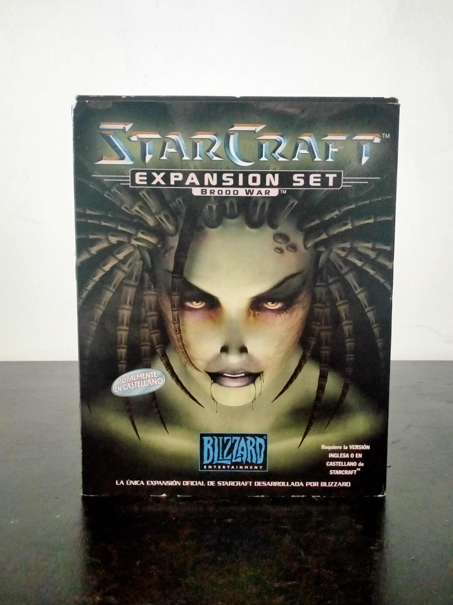

Ficha #000042
StarCraft: Brood War - Expansion Set
StarCraft: Brood War es la expansión oficial de StarCraft, desarrollada por Blizzard Entertainment y publicada originalmente en 1998. Esta expansión amplía de forma considerable el contenido del juego base mediante nuevas campañas para Terran, Zerg y Protoss, nuevas unidades, mejoras de equilibrio y un refinamiento profundo del multijugador competitivo. Brood War consolidó a StarCraft como uno de los RTS más influyentes de la historia del videojuego para PC, especialmente en el ámbito competitivo y de los eSports en Corea del Sur. La edición española en formato Big Box distribuida por Sierra incluía el juego completo en CD-ROM y material impreso relacionado con las nuevas unidades y árboles tecnológicos de cada raza.
- Formato
- Big Box
- Plataforma
- Win95 Win98 WinNT MacOs
- Género
- Estrategia en tiempo real Ciencia ficción Estrategia militar
- Serie
- Todos Big Box
- Desarrollador
- Blizzard Entertainment
- Distribuidor
- Blizzard Entertainment, Sierra
- EAN
- —
Contenido de la edición
- CD-ROM
- Manual
- Tarjetas de referencia
Preservación
- Protección
- Verificación de CD
- Formato recomendado
- BIN/CUE
- Jugable en virtualización
- Sí
La preservación puede realizarse correctamente mediante imagen BIN/CUE del CD original. Requiere el disco original o métodos compatibles para superar la verificación de CD en sistemas modernos.